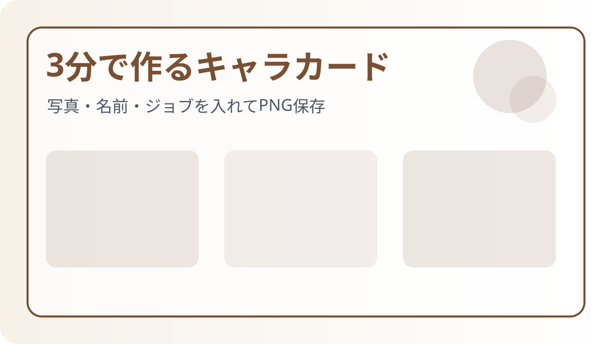
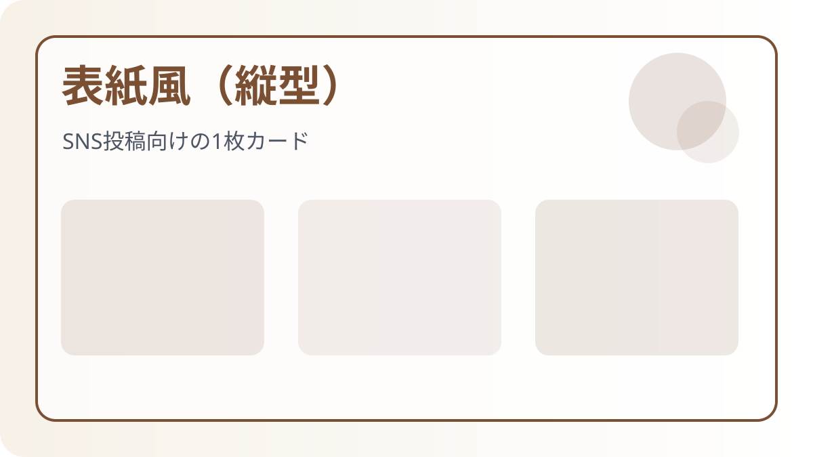
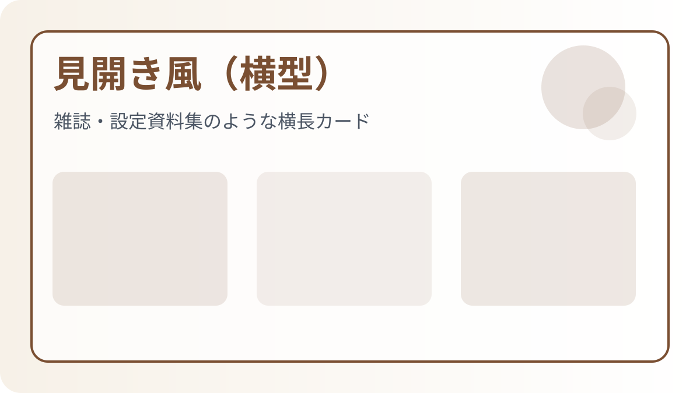
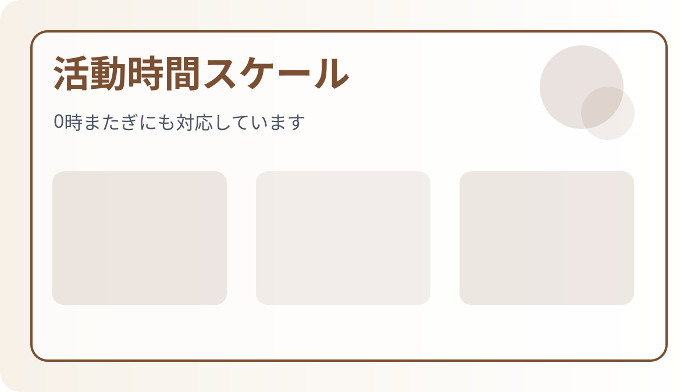
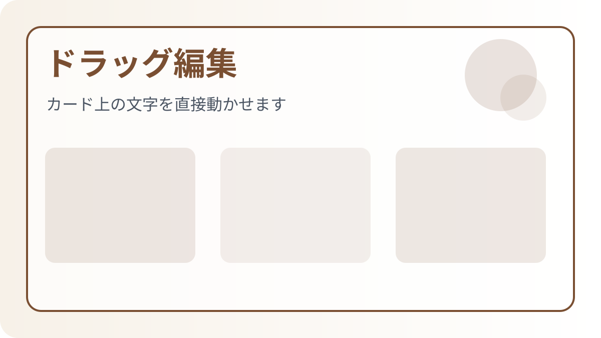
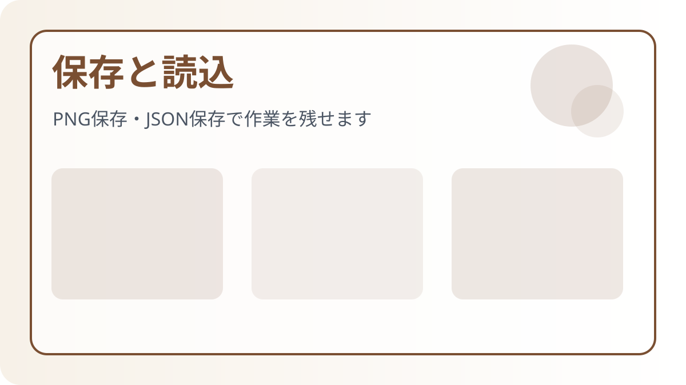

3分で作るキャラカード

表紙風（縦型）
SNS投稿向けの縦型カードです。v30までの表紙風レイアウトを基準に、名前・ジョブ・説明文を1枚にまとめられます。
- フレームON/OFFが使えます。
- 活動時間は必要な場合だけONにします。
- サブジョブ欄はON/OFFできます。

見開き風（横型）
雑誌や設定資料集のような横長カードです。背景透過率、中央綴じ、ギャザラー・クラフター欄が使えます。
- 背景表示範囲は全面・左ページ・右ページから選べます。
- 中央綴じラインと綴じ影を切り替えできます。
- ギャザラー・クラフターは個別ON/OFFできます。
ジョブ・ギャザラー・クラフター
メインジョブは1つ選択、サブジョブは複数選択できます。見開き風では説明文の上にギャザラー・クラフター欄を追加できます。

活動時間スケール
開始と終了をスライダーで設定します。22:00〜02:00のように0時をまたぐ場合は、自動的に翌日表示になります。

ドラッグ編集と文字調整
カード上の文字をクリックして選択し、ドラッグで位置を変更できます。ジョブ見出しとジョブ内容は一緒に動きますが、文字サイズ・色・太字は選択した文字ごとに変更できます。

保存と読込
PNG保存 / 共有
完成したカードを画像として保存します。スマホでは共有シートが開く場合があります。
JSON保存 / JSON読込
編集途中の状態を保存・復元できます。画像を含めた完全保存をしたい場合はJSON保存を使ってください。
Magazine Theme（見開きテーマ）
見開き風では、背景画像を設定しなくても雰囲気を作れる6種類のテーマを選べます。
- 📖 Adventure Record / 羊皮紙
- 🌙 Arcane Archive / Midnight
- 🌿 Botanist Notes / Forest
- 🛡 Knight Chronicle / Crimson
- ⚙ Engineering File / Obsidian
- 📚 Encyclopedia / Silver
テーマを変更すると、見開きの下地色に加えて文字色・見出しライン色も自動でなじむ色になります。
FAQ
サブジョブが表示されません
「サブジョブ欄を表示する」がONになっているか確認してください。
見開き風でフレーム設定が見当たりません
見開き風ではフレーム設定は非表示です。代わりに中央綴じ、綴じ影、背景透過率、見開きテーマを調整できます。
活動時間が表示されません
「活動時間スケールバーを表示する」をONにしてください。表紙風テンプレートでは初期OFFの場合があります。
背景が濃すぎます
見開き風では「背景透過率」を下げると、写真を薄く敷いた誌面風にできます。
文字が重なった時は？
カード上の文字をドラッグして位置を調整してください。フォントサイズを少し下げるのも有効です。
このツールで作成したカードは、FINAL FANTASY XIV のキャラクターを対象としています。それ以外の作品・版権キャラクターへのご使用はお控えください。